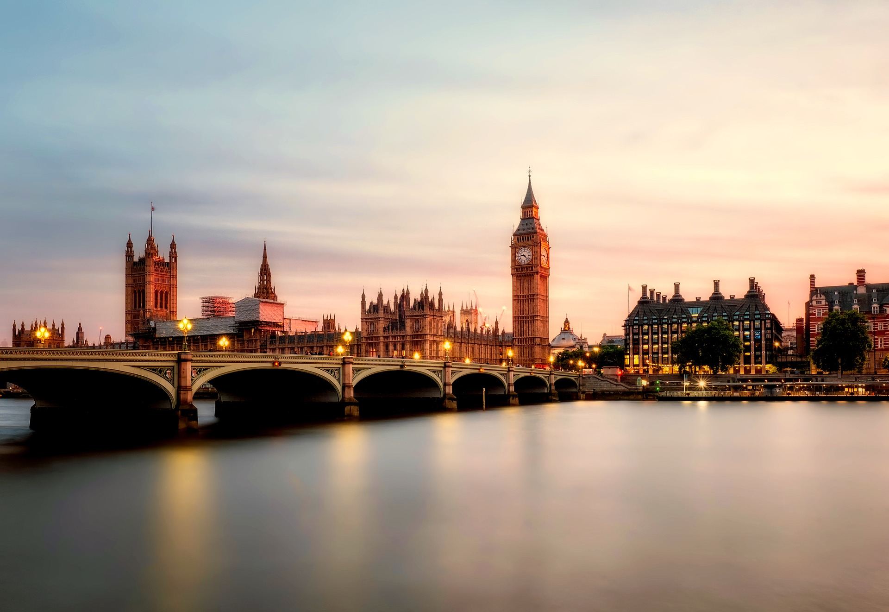
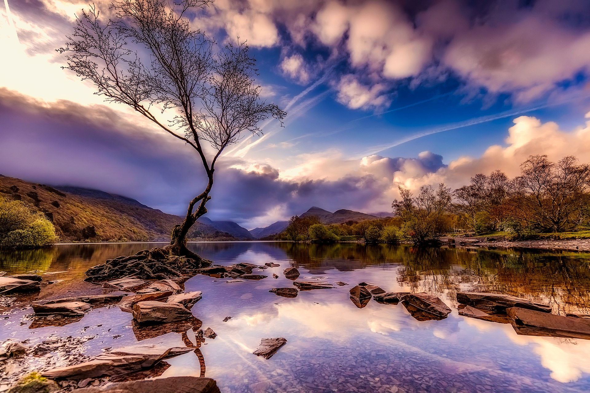
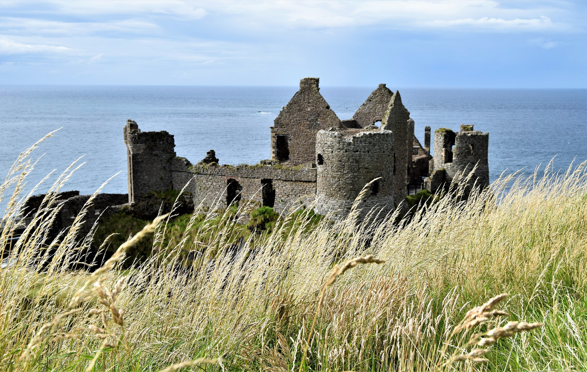

Great Britain
Places To Go
England
 Popular towns and cities:
- London
- Cambridge
- Liverpool
- Manchester
- Oxford
- Brighton
- Canterbury
- Southampton
If you’ve come in search of the patchwork fields and elegant country gardens you’ve seen on screen – in Pride and Prejudice or Downton Abbey – you’ll find them and more. As you travel through villages and towns, listen for the country’s rich tapestry of dialects, which seem to change in the space of a few miles!
Discover the eye-opening diversity that makes modern Britain – from global cuisine to urban culture. And at the heart of it all, find London. This cutting-edge city is as into its new trends as its old traditions. You could spend weeks seeking out its hidden treasures, but to experience England in all its glory, you’ll want to venture further afield.
Scotland
 Popular towns and cities:
Popular towns and cities:
- Applecross
- Edinburgh
- Dundee
- Glasgow
- Highlands
- Inner Hebrides
- Orkney
- Shetland
If you want to experience the Scotland of your dreams, it’s definitely here. Travel from the buzzing cities of Edinburgh and Glasgow to the off-the-beaten-track beauty of the Highlands and islands, untouched by time. You can stretch your legs hiking majestic mountainscapes, or wander pristine beaches where your footprints will be the only ones in the sand. So look beyond the bagpipes and whisky and you’ll uncover a dynamic country where you’re as likely to find experimental music and theatre as you are tweed and tartan.
There are multiple options when it comes to getting to Edinburgh. You can fly there from most cities in around an hour. Alternatively, you can get the train from London which takes about 4 hours 30 minutes.
Wales
 Popular towns and cities:
- Anglesey
- Breacon Beacons
- Cardiff
- Conwy
- Pembrokeshire
- St Davids
For a place with such exciting landscapes - from snow-capped peaks to wild coastline – Wales is compact and neighborly. Come to switch off, and explore untouched valleys and sleepy villages. Or come to enjoy raring-to-go towns and the capital Cardiff – voted Britain’s most sociable city.
From London, you can be here in just over two hours. Then all the adventure you could wish for, in this enchanting Celtic land, is yours. From London you can get to Cardiff by train in just over 2 hours.
Northern Ireland
 Popular towns and cities:
- Belfast
- Causeway Coast
- Newcastle
- Bangor
- Newtownabbey
- Lisburn
Come and see for yourself these landscapes so magical they could be fantasy, from forbidden forests to sweeping glacial valleys. Take the captivating coastal road to see the Giant’s Causeway, one of Europe’s most celebrated natural wonders, or feel the spray from the other side of the Atlantic. When it comes to city life, there’s the colorful capital Belfast and fun-filled Derry - nicknamed Legenderry by locals.
Whether you want to hit a golf ball around a world-class golf course or hit the pub for a ‘trad’ music session, you’re in for some great craic on the emerald isle. You can fly to Belfast from most British cities. From London it is a 1 hour and 15 minute flight.
Things To Do
Outdoors
Suggestions:
- Beaches
- Coast
- Cycling & Walking Trails
- Forests & Woodlands
- Countryside
- National Parks
- Parks & Gardens
- Historic
- Lakes & Waterways
From the idyllic sanctuaries of the Lake District to the brooding, legend-steeped Scottish Lochs – and so many ways to explore them – there’s no country like Britain for a taste of the great outdoors. Whether on bike or on foot, you can ravish the sprawling Welsh coast and wild landscapes of Devon—straight out of a fairy tale. With famous lakes, glens, hollow ways and a multitude of eccentric wildlife to be found all over the country, there’s enough eye candy to ensnare your imagination for years to come. Bring a camera and step out into the great outdoors!
Landmarks & Attractions
Suggestions:
- Castles
- Night at the Museum
- Cathedrals
- Premier League
- Iconic Landmarks
- World Heritage Sites
With breath-taking sights like Big Ben and the Angel of the North on postcards all over the world, the UK is a proud home to some of the most iconic places you can see. There are countless more landmarks, from crumbling medieval ruins to stunning castles and cathedrals, and this section will help you find them. Chock-full of cool things to see and do, hidden or otherwise, the UK is a kaleidoscopic treasure-trove of sensory wonders waiting to be discovered.
Traditional Britain
Suggestions:
- Royal Shopping
- Quirky Festivals
Imagine a cosy cottage overlooking the countryside, the savoury waft of fresh pie filling your nostrils, a drop of spiced mead warming your tongue… sometimes when the modern world becomes too much, the simple life is best. Escape the city rush with these traditional British itineraries. Take part in hundreds of tours, ceremonies, or even rural pub crawls, all harking back to a simpler and perhaps more posh time. Hear, hear!
Arts & Culture
Suggestions:
- Theatre & Musicals
- Writers & Artists
You've heard of London and Edinburgh, but it's not just Britain's best known cities that carry the culture torch. Thanks to a dazzlingly rich history, the UK is packed with more literature, arts and culture than you could absorb in a lifetime. Just take a look at our museums, theatres, and other cultural attractions in towns and cities all over the country. You're bound to find a bit of culture in every corner!
Activities
Suggestions:
Your adventure starts here! There's something for everyone in this section, from family-friendly cycling routes to sailing through the Norfolk Broads. Featuring a never-ending array of exciting tours, world-famous attractions, romantic itineraries, exotic experiences and so much more, there's no limit to what you can do in the UK. The possibilities really are endless.
Music & Festivals
Suggestions:
- Festival & Events
- Quirky Festivals
The Brits love a good party, and there's no party we like more than a festival. Whatever the season, here's where you could be: out in the open, dancing with your friends to full blast music from your favourite internationally renowned artists, surrounded on all sides by a panoply of delicious food and drink from all over the world. That's a festival for you. See iconic acts at Glastonbury, immerse yourself in beautiful art at Festival No. 6, or soak up the quirkiest of culture at Edinburgh Fringe… there's something for everyone. Find out which events are taking place in the UK and where.
Food & Drink
Suggestions:
- Afternoon Tea
- Beer, Cider, and Wine
- Distillery
- Food Festival
- Food Markets
- Regional Specialties
- Pubs & Cocktail Bars
- Top Restaurants
- Eating Out
No one does food like the British do. Whether it's a traditional afternoon tea, fish and chips by the seaside or one of countless specialist international cuisines when eating out, you can find everything you need to know about food in Britain here. From regional specialities like the legendary Cornish pasty to the dark and peppery Haggis, there's a mouth-watering delight to be tried (and devoured!) in Britain's every corner. Yum!
Royal Britain Attractions
Suggestions:
Be King or Queen for a day! Ever wanted to explore Her Majesty the Queen's iconic residence, Buckingham Palace, or take part in the annual Trooping the Colour ceremony? Britain's long and rich regal history means there's a golden nugget of royal heritage to be discovered in every corner. Enjoy nature and splendorous wildlife in one of many Royal Parks, take the grand tour of William and Kate's Kensington Palace and breach Henry VIII's domain at Hampton Court. Mind your head!
Sports & Leisure
Suggestions:
If you've heard we Brits are mad about football, you're probably right. But it's not just footie that gets us going—the UK has some of the most exciting sports attractions and facilities in the world (and some of the most dedicated fans, too!) From the Olympic Park to Wembley Stadium, we've really got it all. Get your boots on or set your tee—whatever you do, make sure you check out the mind-blowing range of sport attractions and events all over the country. Go on!